Clustering can be used to get a more nuanced understanding of the data. As an unsupervised learning
method it relies on non-labeled data to determine patterns within the data. Clustering relies on numerical data which can be
treated as a vector iun n-dimensional space. Using various distance
measures, similarities between vectors (rows/data entries) can be unearthed and grouped together. If all goes well,
these groups or clusters can be used to identify outliers, meaningful distinctions, label data or check labels amongst others.
Two critical parameters that play a role in clustering are the distance metric and the number of clusters.
The fundamental concept behind using distance metrics is that those vectors (rows) that are more similar to eachother will have less distance between them. Thus, when attempting to find similarities between rows, calculating distance is the primary method of action to develop clusters. There are many distance metrics to choose from and each have their own advantages and disadvantages. The three that will be used for this project are Euclidean, Manhattan, and Cosine similarity. Euclidean distance is a metric based off of the pythagorean theorem and allows one to find the distance between two vectors by finding the distance between component parts, squaring them, summing them, and then taking the square root of the total using this formula:
Euclidean distance calculates the shortest path between two vectors. In comparison, Manhattan distance is simpler to understand. Distance using this metric is calculated by taking the absolute value of the distance between components and adding the distances together using this formula:
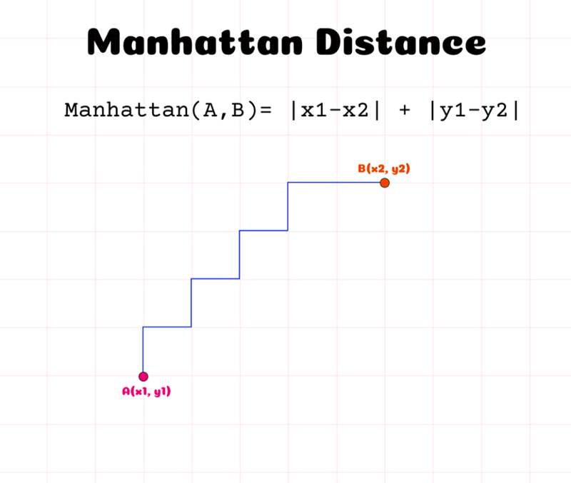As opposed to calculating the shortest distance between two vectors, Manhattan distance calculates the real differences for each component and calculates the sum. Interestingly, the reason it is known as Manhattan distance is because this method would calculate the distance a car would drive between point A and point B in a place setup with roads intersecting at right angles (just like Manhattan). Lastly, cosine similarity uses a different notion of distance. Instead of calculating a numeric distance between the vectors, the cosine of the angle created between them is taken. The formula uses some calculus, but essentially what happens is the dot product of the vectors is calculated (the dot product essentially represents the amount of directional similarity the vectors share) and then normalized by the magnitudes of the vectors(this ensures that vectors are unit vectors (lengths of one)). Once this is achieved, the result is equivalent to the cosine of the angle created between the two vectors. The full formula is below:
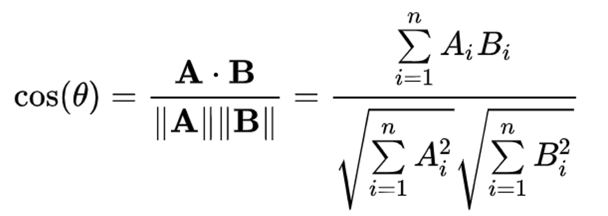
Cosine similarity is particularly useful for higher dimensional data, which is very helpful given that Manhattan and Euclidean (particularly Euclidean) distance metrics
become less accurate as the number of dimensions increases. This is largely due to the fact that in higher dimensions, the mathematical concepts
that are so effective and intuitive in 3D space start to break down.
Due to the pros and cons of each distance metric, it is best to use a collection of them when determining clusters and examining the results
alongside a working knowledge of the data itself and the goals of the analysis.
The number of clusters is a hyperparameter for clustering meaning it dictates the learning process. Regardless of the distance metric used,
determining an appropriate number of clusters is absolutely essential to derive meaningful insights from clustering. Thus, tools that can assist
in establishing the amount of clusters can be used alongside a working knowledge of the data to find an optimal number of clusters. Some tools
that can be used are the elbow, silhouette, and gap statistic methods.
The silhouette method calculates a coefficient between -1 and 1 for each data point based on its similarity to its own cluster and dissimilarity
with the nearest cluster to it. Aggregating the coefficients for each cluster allows for an average score to be calculated for a given number of clusters
with the aim being to use the number of clusters that maximizes the average silhouette score.
The elbow method looks to display the average within sum of squares value for a given amount of clusters. Essentially, for a given
number of clusters, the elbow method calculate the sum of the squared differences for the points within each cluster and the goal is
to choose the number of clusters where diminishing returns from adding another cluster kicks in. This point is displayed as an elbow
in the graph.
The gap statistic compares within cluster variation for different numbers of clusters with the expected values under a distribution of
data with no obvious clusters (known as a null reference distribution). With the gap statistic, the goal is to find the number of clusters that
maximizes the difference between these two measures (a larger difference would indicate less within cluster variation, which is good).
Prior to clustering the text data from the 5 twitter searches, the elbow, silhouette, and gap statistic methods are used to determine the appropriate amount of clusters or rather a range of potentially valid clusters to test. To do so most effectively, the clean text dataframe has to be normalized as each search has a differing amount of words and thus frequencies vary as a result. To fix this, min-max normalization was used to create a new normalized text dataframe.
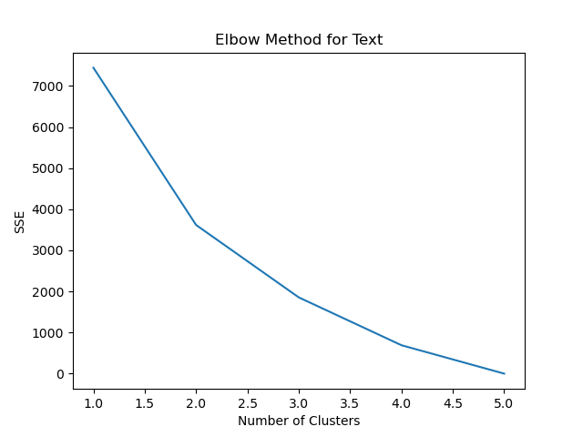The five searches utilized were highly similar to eachother, which can make the task of clustering hard as differentiation would be hard to come by. Despite this issue, the elbow method displays slight kinks at 2, 3, and 4 clusters with the most significant one being at 2, indicating this is the optimal cluster amount.
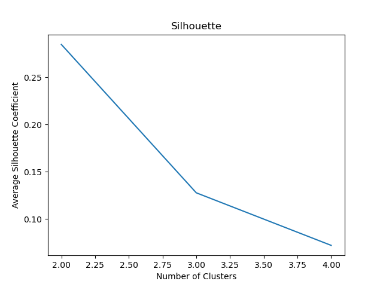Using the silhouette method, a similar conclusion was reached as the peak (the maximum average silhouette coefficient) is clearly at 2 clusters. The alignment between the elbow and silhouette method indicates that at the very least, 2 clusters is an amount that should be examined, if not the optimal amount. When using other distance metrics for the silhouette method (Manhattan and Cosine), Manhattan distance yielded a nearly identical graph, while Cosine similarity yielded negative average silhouette coefficients, indicating that all clusters were wrong. This result leads to the conclusion that Cosine similarity is not the ideal distance metric to use, and Euclidean distance will suffice.
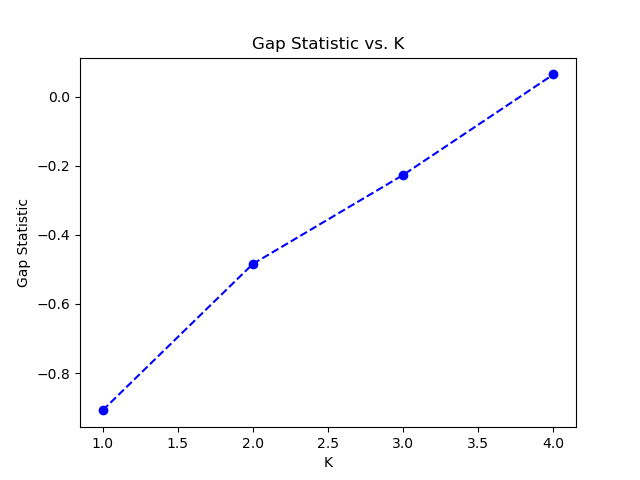The gap statistic method shows a result that is at odds with those of the elbow and silhouette methods. With each extra cluster, the gap statistic rises with 4 being the cluster amount with the largest gap. In fact, all other cluster numbers have a negative gap statistic which indicates that for cluster amounts less than 4, there is more intracluster variation (point dispersion) than in the null reference distribution that already has no obvious clusters. This is not an ideal result, but the fact that there are only 5 data points means this is certainly possible without major cause for alarm. If more searches were performed, the gap statistics would be positive, or at least, more positive. The cluster amount of 4 that is recommended by the gap statistic should also be examined.
Kmeans clustering is a partitional clustering method based around centroids (the centers of clusters). The way kmeans works is the
distances to each centroid are calculated, and those nearest to a given cluster are placed into it, and then the centroid is recalculated.
Then the data points are placed into the cluster closest to it and the process repeats and repeats until either the number of iterations
set by the coder is reached, or no observations can be moved to a closer cluster.
Now that there is a rough idea of how many clusters there should be, kmeans clustering will be perfromed for 2-4 clusters (the range
established by the previous methods). Additionally, knowing that there are only 5 data points, this clustering range would have been a reasonable
range without any insight.
While clustering, interesting groupings started to emerge. For 2 clusters, all searches (allstar, legend, mvp, and superstar) were linked, while 'star' was grouped on its own. On an initial look, this indicates that the words used to describe a star are fundamentally different from allstars, legends, superstars, and MVPs. This makes sense as a star is a different (and lower) caliber of player than the other terms. For 3 clusters, star retained its own cluster, mvp was grouped into its own, and legend, superstar, and allstar were linked. This is an interesting finding as there is a tangible difference between what a star and MVP are verse a legend, superstar, and allstar. Stars and MVPs can be temporary, where as allstars and superstars do not fade as easy, they perform at a high level over a long period of time, not just one season. Lastly, when using 4 clusters, only allstar and superstar were grouped together, and the rest got their own cluster. This further reveals that the notions of an allstar and superstar are generally aligned and a unique type of player from even the typical star or MVP. A summary of the clustering results is shown below:
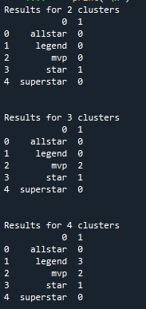Hierarchical Clustering is another great way to visualize data, and is easy to interpret. Unlike kmeans and partitional clustering, hierarchical clustering does not have distinct groups or clusters. Instead clusters can be nested inside of other cluster. This clustering is performed by some distance measure (euclidean in this case) except instead of distances between observations being compared to be placed into cluster centroids, they are compared to eachother. The closest observations are grouped together first and they represent a dendrogram. The process repeats until all observations are grouped into a single dendrogram. Below is the dendrogram for the text data. Each vertical line at the bottom of the plot represents a single observation (or search) and each horizontal line represents a small cluster.
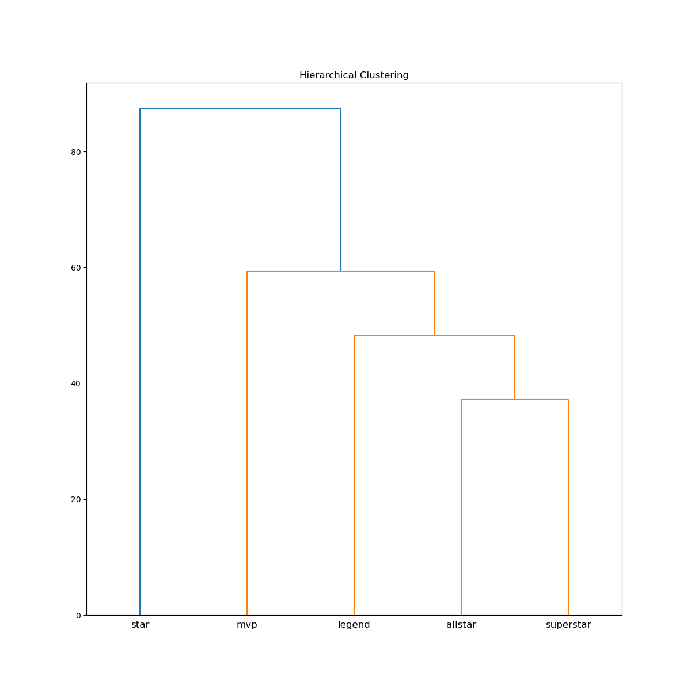Here, the results from kmeans are corrobrated. The star search receives its own cluster, and the rest can be linked together, but also can be broken down into other subgroups exactly as kmeans showed with each extra number of clusters. The dendrogram shows alignment with the fact that allstar and superstar are very similar, but also that legend can be grouped with them. Using manhattan and cosine distance metrics yielded the same structure.
Density Clustering works based on the notion that a cluster is a region of high point density and clusters are seperated by regions of low point density. By doing so, it groups data points that are close to one another rather than close to a centroid like kmeans does. Unfortunately, the text data, limited by the 5 searches did not make for good density based clustering. The results from the clustering are shown below:
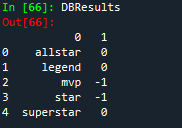Given the 5 data points, DBSCAN grouped allstar, legend, and superstar, and marked mvp and star as noise points. As a result, this information is useful insofar as it confirms what we have already unearthed from the previous techniques, but provided no new insight.
With all the information that has been compiled, the optimal number of clusters for this text data is 3. Although the elbow, silhouette, and
gap statistic methods recommended either 2 or 4 clusters, the small sample size lessens the effectiveness of these measures. Additonally, 3 clusters
is the amount that revealed the most interesting insight. The linkage between allstars, superstars, and legends is a notable one, and can help
reveal what truly makes a player transcendant.
Given this decision, it is time to visualize. First, looking at the clusters in 3D reveals visually what the results indicate.

Here, we visually see how MVP and star were granted their own clusters wile the other 3 searches are assigned to a cluster established at the
center of the 3 points. This visual also reveals why when 4 clusters are used, legend is separated from allstar and superstar
(the 2 points on the bottom right) as the allstar and superstar search results are very closely linked.
Looking at the words themselves, the reason why 3 clusters linked legend, allstar, and superstar together becomes more clear.
The 'Star' wordcloud is particularly littered with words filling Twitter recently such as 'Antivaxxer' and 'Activist' as plenty of high profile players (like Kyrie Irving) have been in the news due to these issues. A notable aspect of this wordcloud is that there are no real significant words to report, indicating that the notion of a star is relatively ambiguous and nebulous.
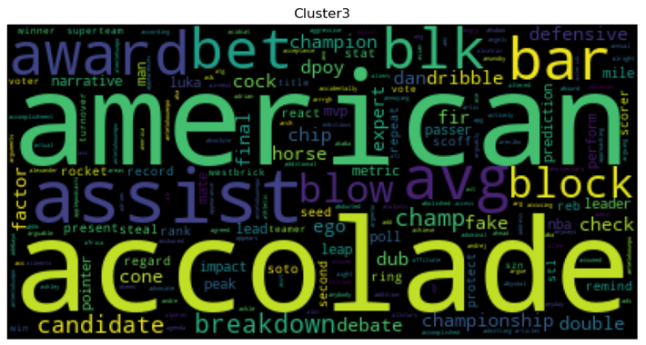Unlike the star wordcloud, the MVP wordcloud is a bit more distinguished with words such as 'accolade', 'champion', and 'leader'. Unsurprisingly, these are traits generally correlated with an MVP and indicate a high level of success, something MVP claiber players generally enjoy during their career (almost by definition).
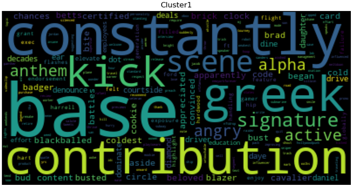With the allstar, superstar, legend wordcloud, it becomes clear why these searches have their own cluster. Words like 'contribution' ,'beloved', and 'signature' indicate a higher level of respect bestowed upon these players. However, the real key to this cluster is the term 'constantly'. As one of the top words in the wordcloud, this term was mentioned a lot and rightfully so. The difference between an mvp or a star, and this upper echelon of player is the consistency with which they perform. Playing at an elite level, not just once, but over time, is the key to being a true star.
The code used for the text clustering in Python is linked here.
In this section, the record data will be clustered. The data used is the
normalized data set with labels.This data contains labels both for the player's positions and a label for their salary range as discussed
in the 'Exploring Data' tab. For this task, the data will be clustered to check the validity of the salary labels. Additionally, the data will
be clustered to see if position groups can be generally determined based on specific stats.
It is important to note that due to the size of the dataset, subsets were used for this analysis. For ease of vizualization, 3 variables
are chosen. To validate the salary labels, the 3 variables used are the Salary variable and 2 highly correlated with Salary; efficiency
and 2k Ratings. Although more highly correlated, true shooting attempts and games started are suboptimal variables to use for this analysis.
The efficiency (PER) stat is biased in nature towards offense (for more reading on the
PER stat) thus it would be redundant to
use true shooting attempts (especially given their .9 correlation with one another). Games started was not chosen because although important,
many variables like injury or rotation decisions can impact who starts and who does not. As a result, 2k Ratings and PER are chosen as both provide
relatively accurate single value summaries of a player's ability.
Given that the salary labels are split into 4, that is around the number of clusters that we could expect to find. To check, the elbow, silhouette, and gap statistic methods are used. To do so using the 3 distance metrics, first dissimilarity matrices were calculated for Euclidean, Manhattan, and Cosine Similarity. These matrices were then used along with the hclust() function in R to form dendrograms.
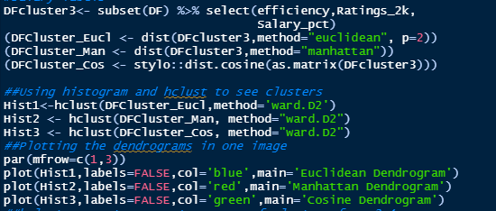The dendrograms for the 3 different distance metrics produced highly similar results. All metrics suggest that the data can be broken into 2 or 4 clusters relatively neatly, with 2 clusters likely being the dominant suggestion given the height at which the data splits into 2 clusters relative to where it splits into 4. There is also an argument for a higher number of clusters all the way up to 8. However, the main takeaway from these plots is that the range to be further evaluated is 2-8 clusters.
The elbow, silhouette, and gap statistics will be used to further examine the appropriate number of clusters to use. As a reminder, these methods are heuristics and decision making tools, there are no hard and fast decision making rules involved and the recommended number of clusters is truly only a recommendation.
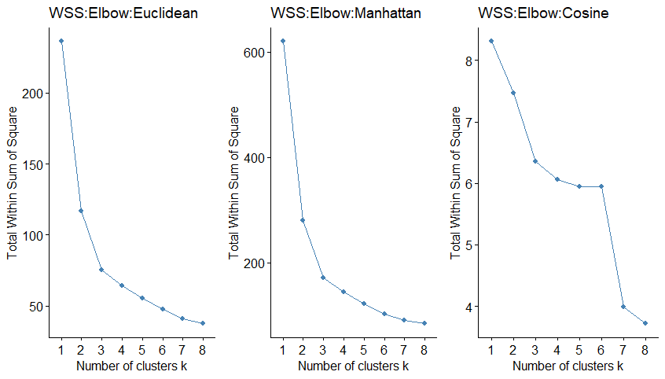There is decent alignment amongst the three different distance metrics; Euclidean and Manhattan distance metrics display a slight elbow at 3 clusters, while the Cosine Similarity plot has a clear elbow at 3,6 and 7 clusters. These results are in alignment with what was expected from the dendrogram plots.
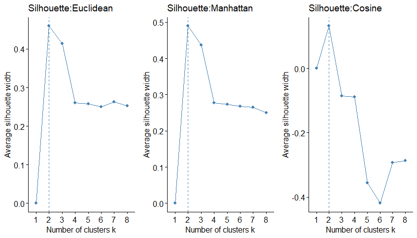All three metrics suggest 2 clusters using the Silhouette method as it is a clear maximum on each of the graphs, with 3 being close behind. However, it would be wrong to rule out as many as 8 clusters based on these plots because for the Euclidean and Manhattan silhouette plots after 4 clusters, there is minimal loss in value from adding an extra cluster. Also, a note on the recurring similarity between outputs given by Euclidean and Manhattan distance metrics vs. the Cosine Similarity plots. This is to be expected. Manhattan and Euclidean distance produce very similar results in low dimensions, and given that the data is only 3 dimensional, large differences between the outputs would be a cause for concern.
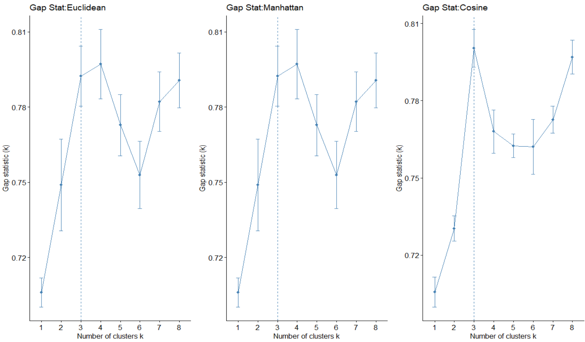Lastly, the gap statistic method displays an optimal cluster of 4. However, 3,7, and 8 all have gap stat values that require further testing an analysis. Interestingly, none of the methods exactly agree with one another. This misalignment further lends credence to the idea that these methods, although extremely helpful, are not the end all be all of determining the number of clusters. The code used to create these plots is shown below:
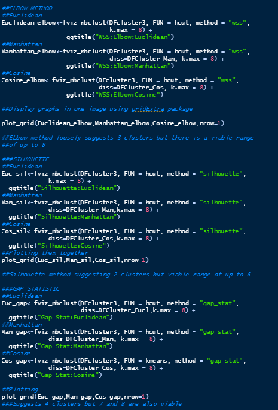
Kmeans clustering in R is highly flexible. Not only can the standard kmeans() function be used to cluster with Euclidean distance, but there
is also a function called pam() which can take a dissimilarity matrix as an input instead of a dataframe. This optionality allows for easy kmeans
clustering with different distance metrics.
Based on prior knowledge about the data and the results from the elbow, silhouette, and gap statistics methods, the 3 values for k that
will be used in the kmeans clustering are 4,7,and 8. Although the optimal number of clusters was theorized by the elbow and silhouette method to
be 2-3, this amount of clusters would not provide any helpful information as it would simply split the data into higher performers and higher paid players
and lower paid players. Based on the silhouette plots, 4 clusters can be used to evaluate the effectiveness of the labels while 7 and 8 clusters
may be able to reveal more insight into subgroups.
Throughout the analysis, Euclidean distance consistently performed the best for this data so first the Manhattan and Cosine clusters will be examined, followed by a more in depth analysis of the Euclidean clusters. Starting with Manhattan distance, here are the plots for 4,7 and 8 clusters:
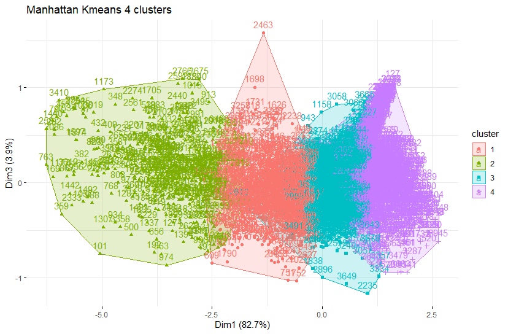The 4 clusters looks the neatest, but it is important to remember that this is 3D data presented in a 2D format, so although the clusters may look like they overlap, this is not necessarily the case. Now onto the cosine clusters. These look significantly different than the Manhattan clusters because of the differences in the distance metric. The cosine similarity metric measures the angle created between two vectors with those most similar having 0 degrees between them. As a result, many of the values are located around that zero value as seen in the plots below:
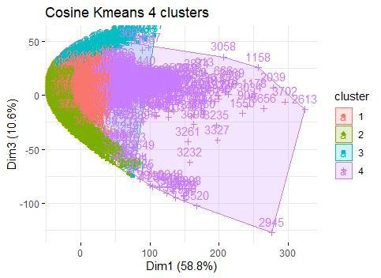These plots look much nicer even as the number of clusters rises in a visual sense and the groupings they identify are not all that dissimilar from the Manhattan and Euclidean distance metrics, however they are slightly less accurate, similar to the Manhattan results. This is no surprise given that Euclidean distance is arguably the optimal distance metric for 3D data.
Now to examine the results for Euclidean distance. Below are the plots:
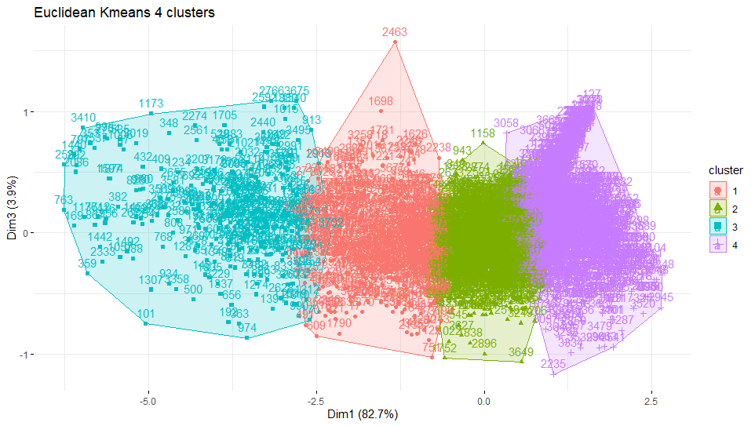These clusters look very similar to those produced by the Manhattan metric at a surface level. To take a closer look at what the clusters reveal, first the 4 clusters can be used to compare against the manually created salary labels. The bar plots below show the frequency count for the manually created labels followed by the count for the cluster labels.
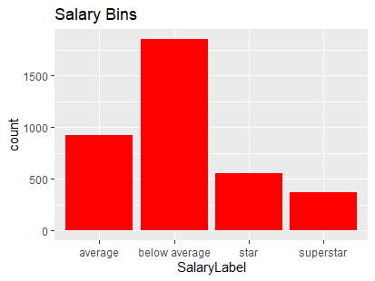 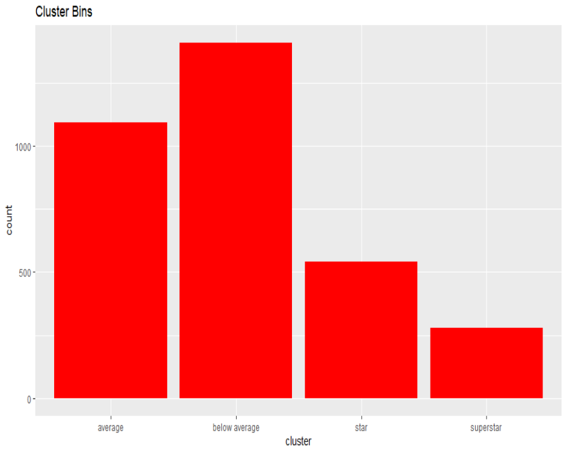Right away it is clear that there is considerable overlap. To see exactly how well these labels map to the manual ones, a confusion matrix is used. Confusion matrices are helpful tools to visualize how accurate an algorithm is. Essentially, each row contains the actual value and the predicted value (in this case cluster) for a particular instance/row. The idea being that the percent of true positives (sensitivity) and negatives (specificity) as well as false positives and negatives can be calculated to measure performance. The major attributes to look at are sensitivity, specificity, and positive and negative predictive value (what % of positives and negatives were true) and balanced accuracy, which is the average of true positive and negative rate.
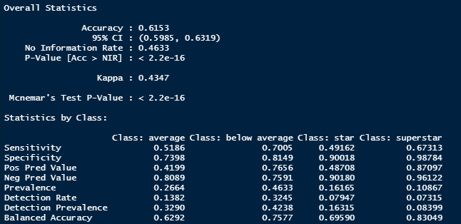Overall, the manually created labels were detected with reasonable accuracy, especially for using only 3 variables. This is particularly true for the below average and superstar labels, which is not surprising given that these labels represent the extremes. With a 3D look at the data, the 4 groupings are clearly delineated and appear as expected.
Notice how as 2K ratings and PER rise, so does salary. However, although the 4 categories of labels can be used well enough, improvements can certainly be made. This would come from taking into account more variables when defining salary labels and also creating more labels to represent particular subgroups.
To examine more fully the data, a 3D look at 7 clusters provides interesting information to look at in this manner.
In the 3D Visualization the clusters break out in a unique way. At the edges the 2 clusters are not so dissimilar from those formed with 4 clusters. The interesting subgroups are clusters 5, 6, and 7. Cluster 5 and 7 demarcates what could potentially be undervalued players. These points have similar 2K and PER ratings compared to clusters 3 and 6 but are paid significantly less, and thus would be a prime grouping to examine further. Also, more specific labels can be created as a result of this clustering work to further identify and analyze subgroups.
In this case there is no singular optimal value of k. The disagreement between the elbow, silhouette, and gap statistic methods combined with the multiple values of k that prove to be informative, lead to the conclusion that 4 and 7 are the optimal number of clusters but no single value is more "right" than the other, it is all about what the goals of the analysis are.
The code used for the clustering of record data in R is linked here.